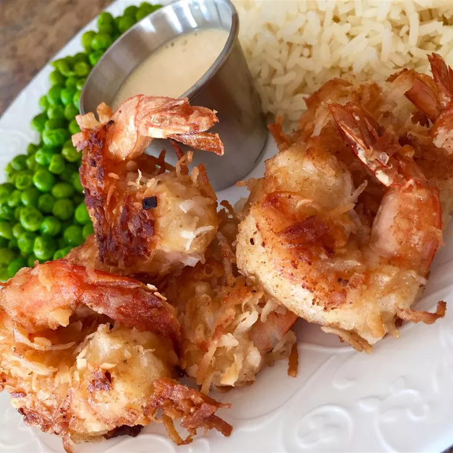

Home
Coconut Shrimp

How To Make Coconut Shrimp
These are great for a yummy appetizer for any occasion! A lovely snack in the summertime. A true vacation
classic with its crispy coconut and tangy dipping sauce. I could eat coconut shrimp for every meal!
Ingredients:
- ¾ Cup of All-purpose Flour, divided
- ⅔ Cup of Beer
- 1 large egg
- 1 ½ teaspoons of Baking Powder
- 2 Cups of Flaked Coconut
- 24 Medium Raw Shrimp, shelled, deveined, with tails attached
- 3 Cups of Oil for Frying
Steps:
- Line a baking sheet with wax paper; set aside.
- Whisk together 1/2 cup flour, beer, egg, and baking powder in a medium bowl until smooth. Place coconut and
remaining 1/4 cup flour in 2 separate bowls.
- One at a time, hold shrimp by the tail and dredge in flour, shaking off excess. Dip in beer batter; allow
excess to drip off. Roll in coconut, then place on the prepared baking sheet. Refrigerate for 30 minutes.
- Heat oil in a deep fryer or large skillet to 350 degrees F
- Working in batches, fry shrimp in hot oil, turning once, until golden brown, 2 to 3 minutes. Use tongs to
remove shrimp to paper towels to drain.